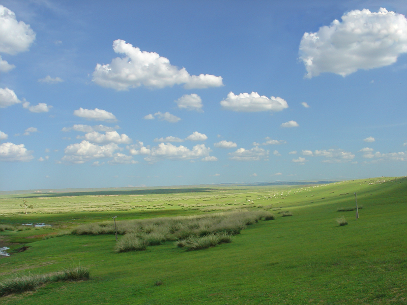
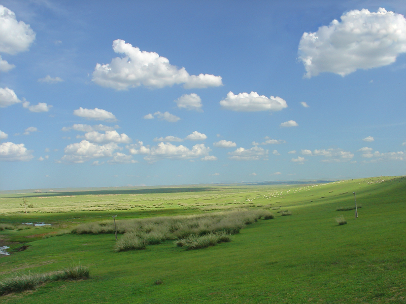

Random Nutrition est une application mobile qui génère des repas équilibrés de manière aléatoire tout en respectant des contraintes nutritionnelles prédéfinies. L'application produit des entrées, des plats, des fromages et des desserts en tenant compte des besoins en énergie, protéines, lipides, glucides et autres macronutriments.
Elle offre également la possibilité d'ajouter ou d'exclure certains types d'aliments pour personnaliser les repas selon vos préférences et besoins.
L'utilisateur peut visualiser ses statistiques d'utilisation et découvrir quelques aliments au hasard.
Cette page affiche deux listes :
En cliquant sur le bouton +, l'utilisateur est redirigé vers une page de création d'aliment personnalisé comprenant le nom, les catégories, les valeurs nutritionnelles, une description, etc. Chaque aliment de la liste est cliquable pour afficher un popup détaillant toutes ses informations.
Sur cette page, l'utilisateur peut :
Un écran de chargement s'affiche avec un conseil, et une fois terminé, les repas générés s'affichent en détails avec la possibilité de les enregistrer individuellement ou en ensemble.
Cette page présente deux listes :
Chaque élément est cliquable pour ouvrir un popup avec les détails du repas ou de l'ensemble. Seuls le nom et la couleur sont modifiables.
L'utilisateur peut configurer diverses options de l'application pour personnaliser son expérience.
Pour toute question, suggestion ou problème, veuillez contacter notre équipe de support à l'adresse suivante :
Email : support@randomnutrition.fr
Vous pouvez également consulter cette page régulièrement pour des mises à jour, FAQ et conseils d'utilisation.

 
